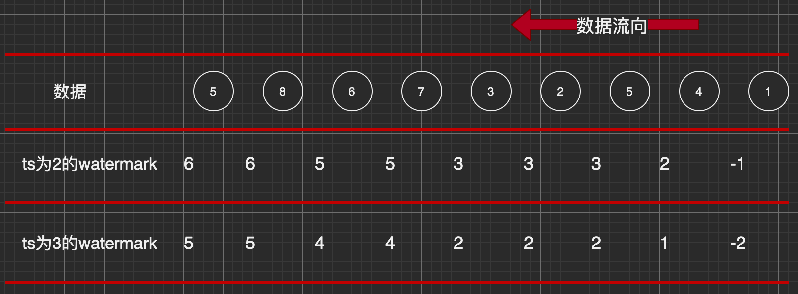

Flink
时间语义与 Wartermark
Flink 中的时间语义
在 Flink 的流式处理中，会涉及到时间的不同概念，如下图所示:

- Event Time : 事件创建的时间。
它通常由事件中的时间戳描述，例如采集的日志数据中，每一条日志都会记录自己的生成时间，Flink 通过时间戳分配器访问事件时间戳。
Ingestion Time : 数据进入 Flink 的时间。
Processing Time : 每一个执行基于时间操作的算子的本地系统时间，与机器相关，默认的时间属性就是 Processing Time。
注：迟到数据指的是考虑进入 Flink 时间或时间创建时间。
一个例子 —— 电影《星球大战》:

图中可以看出，电影上映时间并不是星球大战电影故事情节发生时间顺序。其中，上映时间可以看作是处理时间（电影上映，我们去观看），故事情节顺序可以看做是事件事件（故事发生先后时间）。
不同时间语义有不同应用场合，往往更关心事件时间。
例：一条日志进入 Flink 的时间为 2021-05-09 10:00:00.123，到达 Window 的系统时间为 2021-05-09 10:00:01.234，日志的内容如下:
2017-11-02 18:37:15.624 INFO Fail over to rm2对于业务来说，要统计 1min 内的故障日志个数，应该使用 eventTime，因为我们要根据日志的生成时间进行统计。
EventTime 的引入
在 Flink 的流式处理中，绝大部分的业务都会使用 eventTime，一般只在 eventTime 无法使用时，才会被迫使用 ProcessingTime 或者 IngestionTime。
如果要使用 EventTime，那么需要引入 EventTime 的时间属性，引入方式如下所示:
val env = StreamExecutionEnvironment.getExecutionEnvironment
// 从调用时刻开始给 env 创建的每一个 stream 追加时间特征
env.setStreamTimeCharacteristic(TimeCharacteristic.EventTime)Watermark
基本概念
流处理从事件产生，到流经 source，再到 operator，中间是有一个过程和时间的，虽然大部分情况下，流到 operator 的数据都是按照事件产生的时间（Event Time）顺序来的，但是也不排除由于网络、分布式等原因，导致乱序的产生。
所谓乱序，就是指 Flink 接收到的事件的先后顺序不是严格按照事件的 Event Time 顺序排列的。

那么此时出现一个问题，一旦出现乱序，如果只根据 eventTime 决定 window 的运行，我们不能明确数据是否全部到位，但又不能无限期的等下去，此时必须要有个机制来保证一个特定的时间后，必须触发 window 去进行计算了，这个特别的机制，就是 Watermark。
Watermark 是一种衡量 Event Time 进展的机制（取代了之前事件时间的时间戳，设定了窗口关闭的延迟触发）。
Watermark 是用于处理乱序事件的，而正确的处理乱序事件，通常用 Watermark 机制结合 window 来实现。
数据流中的 Watermark 用于表示 timestamp 小于 Watermark 的数据，都已经 到达了，因此，window 的执行也是由 Watermark 触发的。
Watermark 可以理解成一个延迟触发机制，我们可以设置 Watermark 的延时时长 t，每次系统会校验已经到达的数据中最大的 maxEventTime，然后认定 eventTime 小于 maxEventTime - t 的所有数据都已经到达，如果有窗口的停止时间等于 maxEventTime – t，那么这个窗口被触发执行。

上图中是不同 timestamp 对应的不同 watermark
其中每一个圆圈表示不同秒产生的数据，每个数据到来都会携带一个 watermark（数据产生时间加上 timestamp），如果 watermark 是 3 则表示从此数据之后不再有 3s 之前产生数据的到来（若延迟较长，后面还有，则有窗口函数来接着）。若窗口时间是 5s，则在 watermark=5 的数据到来时，关闭窗口 1。
当 Flink 接收到数据时，会按照一定的规则去生成 watermark，这条 watermark 就等于当前所有到达数据中的 maxEventTime - 延迟时长，也就是说，watermark 是基于数据携带的时间戳生成的，一旦 watermark 比当前未触发的窗口的停止时间要晚，那么就会触发相应窗口的执行。由于 event time 是由数据携带的，因此，如果运行过程中无法获取新的数据，那么没有被触发的窗口将永远都不被触发。
Watermark 的传递
若有一个上游任务向下游任务传递 watermark，则通过广播向下游任务传递；若有多个上游任务给一个下游任务，则选择上游中最小的 watermark 传递给下游。

下游任务会专门给上游任务开辟一块分区存储他们的 watermark（Partition WM），然后从所有 watermark 中选择最小的作为自己的时间时钟（Event-time clock）；在不需要更新 watermark 的时候，则不需要向下游广播（图 3）。
Watermark 的引入
watermark 的引入很简单，对于乱序数据，最常见的引用方式如下:
SingleOutputStreamOperator<SensorReading> dataStream = inputStream.map(line -> {
String[] fields = line.split(",");
return new SensorReading(fields[0], Long.valueOf(fields[1]), Double.valueOf(fields[2]));
})
// 方式1
// 升序数据设置时间戳和watermark
.assignTimestampsAndWatermarks(new AscendingTimestampExtractor<SensorReading>() {
@Override
public long extractAscendingTimestamp(SensorReading element) {
return element.getTimestamp() * 1000L;
}
})
// 方式2
// 乱序数据设置时间戳和watermark
// BoundedOutOfOrdernessTimestampExtractor类需要传一个最大乱序程度的值;
// BoundedOutOfOrdernessTimestampExtractor看底层继承是周期性生成watermark（最大时间戳减掉延迟时间 ）
.assignTimestampsAndWatermarks(new BoundedOutOfOrdernessTimestampExtractor<SensorReading>(Time.seconds(2)) {
@Override
public long extractTimestamp(SensorReading element) {
// 时间戳是毫秒数
return element.getTimestamp() * 1000L;
}
});Event Time 的使用一定要指定数据源中的时间戳。否则程序无法知道事件的事件时间是什么(数据源里的数据没有时间戳的话，就只能使用 Processing Time 了)。
我们看到上面的例子中创建了一个看起来有点复杂的类，这个类实现的其实就是分配时间戳的接口。Flink 暴露了 TimestampAssigner 接口供我们实现，使我们可以自定义如何从事件数据中抽取时间戳和生成 watermark
MyAssigner 可以有两种类型，都继承自 TimestampAssigner
- AssignerWithPeriodicWatermarks
周期性的生成 watermark：系统会周期性的将 watermark 插入到流中
默认周期是 200 毫秒，可以使用 ExecutionConfig.setAutoWatermarkInterval()方法进行设置
升序和前面乱序的处理 BoundedOutOfOrderness ，都是基于周期性 watermark 的。
- AssignerWithPunctuatedWatermarks
- 没有时间周期规律，可打断的生成 watermark
Watermark 的设定
在 Flink 中，watermark 由应用程序开发人员生成，这通常需要对相应的领域有一定的了解
如果 watermark 设置的延迟太久，收到结果的速度可能就会很慢，解决办 法是在水位线到达之前输出一个近似结果
而如果 watermark 到达得太早，则可能收到错误结果，不过 Flink 处理迟 到数据的机制可以解决这个问题
EvnetTime 在 window 中的使用
// ...
// 转化成SensorReading类型watermark
SingleOutputStreamOperator<SensorReading> dataStream = inputStream.map(line -> {
String[] fields = line.split(",");
return new SensorReading(fields[0], Long.valueOf(fields[1]), Double.valueOf(fields[2]));
})
// 乱序数据设置时间戳和watermark
// BoundedOutOfOrdernessTimestampExtractor类需要传一个最大乱序程度的值;
// BoundedOutOfOrdernessTimestampExtractor看底层继承是周期性生成watermark（最大时间戳减掉延迟时间 ）
.assignTimestampsAndWatermarks(new BoundedOutOfOrdernessTimestampExtractor<SensorReading>(Time.seconds(2)) {
@Override
public long extractTimestamp(SensorReading element) {
// 时间戳是毫秒数
return element.getTimestamp() * 1000L;
}
});
// 基于事件时间的开窗操作，统计15s内温度的最小值
SingleOutputStreamOperator<SensorReading> minTempStream = dataStream.keyBy("id")
.timeWindow(Time.seconds(15))
.minBy("temperature");
// ...确定窗口开始和结束时间
public class TumblingEventTimeWindows extends WindowAssigner<Object, TimeWindow> {
// ...
// 偏移量属性，一般用来处理不同时区情况
private final long offset;
@Override
public Collection<TimeWindow> assignWindows(Object element, long timestamp, WindowAssignerContext context) {
if (timestamp > Long.MIN_VALUE) {
// Long.MIN_VALUE is currently assigned when no timestamp is present
// 获得窗口开始时间，offset是窗口偏移量（修改窗口开始时间）
// getWindowStartWithOffset 源码见下面代码
long start = TimeWindow.getWindowStartWithOffset(timestamp, offset, size);
return Collections.singletonList(new TimeWindow(start, start + size));
} else {
throw new RuntimeException("Record has Long.MIN_VALUE timestamp (= no timestamp marker). " +
"Is the time characteristic set to 'ProcessingTime', or did you forget to call " +
"'DataStream.assignTimestampsAndWatermarks(...)'?");
}
}
// ...
}public class TimeWindow extends Window {
// ...
/**
* Method to get the window start for a timestamp.
*
* @param timestamp epoch millisecond to get the window start.
* @param offset The offset which window start would be shifted by.
* @param windowSize The size of the generated windows.
* @return window start
*/
public static long getWindowStartWithOffset(long timestamp, long offset, long windowSize) {
return timestamp - (timestamp - offset + windowSize) % windowSize;
}
// ...
}